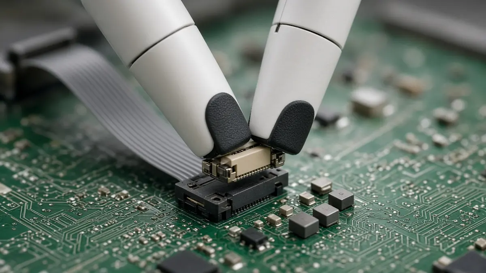

Deployments
SynDexy delivers its first small batch of C1 dexterous humanoids for precision assembly
Short answer: SynDexy, a Beijing robotics start-up founded in 2025, announced on 30 October 2026 that it has delivered its first small batch of C1 humanoid robots, a wheeled design with two arms built for precision assembly work in consumer electronics and component factories, according to Pandaily. The company has not said how many units it delivered or who the customers are, Pandaily reported.

The C1's main selling point is touch. According to Gasgoo, SynDexy developed its own visuotactile sensors, which it says reach micron-level spatial resolution, and pairs them with an in-house model called M1 that combines vision, touch and force. The company says this lets the robot handle fine, contact-heavy steps such as assembling flexible circuits and inserting cables.
SynDexy lists 22 degrees of freedom for the C1 and a motion control cycle of 1 millisecond, and says the robot reached a success rate above 98% on key tasks in earlier testing, according to both reports. These are company figures that have not been independently tested, and Pandaily notes that SynDexy has not backed its description of M1 as a first of its kind with outside comparisons. Both outlets say development began in April 2026, with a prototype in July and the first batch in October.
According to Pandaily, the company's chief scientist is Professor Fang Bin of Beijing University of Posts and Telecommunications, and its team includes people from Tsinghua University, Beihang University, Harbin Institute of Technology, Beijing University of Posts and Telecommunications, Huawei, DJI and Tencent, with researchers making up more than 90% of staff. For more on touch sensing for robots, see our story on MoSense's electronic skin, and find more Chinese humanoid news on our China hub and deployments hub.